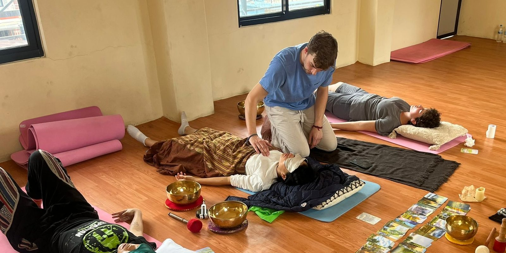
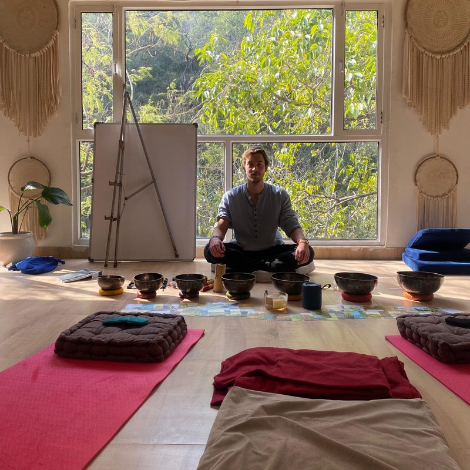

Atme. Löse dich. Komm an.
Atemarbeit und Yoga Sessions, Pranayama, Hatha, Yin und mehr, achtsam begleitet, keine Vorerfahrung nötig.

Warum Menschen hierher finden
Manche finden aus einem bestimmten Grund hierher: Stress aus der Arbeit, der sich längst in den Rest des Lebens hineingeschlichen hat, ein Körper, der nie wirklich Feierabend zu haben scheint, ein Muster oder ein Gewicht, das sich durch reines Nachdenken nicht hat verschieben lassen. Andere haben einfach das Gefühl, dass etwas daran, wie sie sich durchs Leben tragen, leichter sein könnte, ohne genau sagen zu können, was. Beides ist ein guter Grund anzufangen.
Das ist kein Versprechen, dass Atmung das allein auflösen kann, das Leben ist komplizierter als eine einzelne Session, und manches, was du mit dir trägst, verdient mehr als Atemarbeit allein. Was ich sagen kann: Hier bemerken Menschen oft die erste Veränderung, nicht in der Geschichte, die sie sich über ihren Stress erzählen, sondern im Körper, der ihn gehalten hat, ein Kiefer, der sich löst, ein Atem, der tiefer reicht als lange nicht mehr, etwas mehr Raum, tatsächlich zu fühlen, was da ist, statt es nur zu verwalten.
Wenn dir das bekannt vorkommt, ist eine Connected Breath Session meist der einfachste Weg, herauszufinden, wie sich das anfühlt, ohne Druck, ohne Reparaturzwang, einfach Raum zum Atmen und zu sehen, was sich löst.
Gerade Aktuell
Ein paar Dinge, die gerade in Bewegung sind, wird laufend aktualisiert.
- Gutscheine zu Weihnachten Verschenke eine Session an jemanden, der sie gebrauchen könnte. Die Anfrage dauert nur ein paar Minuten, den Rest klären wir direkt miteinander. Gutschein anfragen.
- Verschenke eine Session Schenke jemandem eine Session, zum Geburtstag, in einer schwierigen Zeit, oder einfach so. Die Anfrage dauert nur ein paar Minuten, den Rest klären wir direkt miteinander. Gutschein anfragen.
- Breathwork Training, Level 1, Marokko Vom 3. bis 10. Dezember. Ich assistiere bei diesem Retreat, nehme also nicht selbst als Teilnehmer teil, trotzdem sind Vor-Ort-Termine in dieser Woche begrenzt. Melde dich, dann finden wir einen passenden Termin.
Willkommen
Ich bin Justus, zertifizierter Atemarbeit Practitioner und 500 Stunden Yogalehrer. Verbindungsatmung, Pranayama, Yoga und Meditation können alle online oder vor Ort stattfinden, je nachdem was für dich passt. Rebirthing Atemarbeit ist die eine Ausnahme, das findet nur vor Ort statt, wo ich dich bei etwas so Intensivem direkt halten und begleiten kann. Über die Jahre ist daraus ein ziemlich breites Repertoire geworden: Verbindungsatmung, Rebirthing Atemarbeit, Pranayama, Yoga, Meditation, und dazu noch etwas Körperarbeit und Klangheilung. Ich bringe davon ein, was gerade wirklich zu dir passt.
Mehr über meinen Werdegang und meine Ausbildung



Wo auch immer du gerade stehst
Die Menschen, die auf dieser Seite landen, kommen von ziemlich unterschiedlichen Ausgangspunkten. Manche haben noch nie eine Yogamatte berührt, manche haben schon eine feste eigene Praxis, und die meisten liegen irgendwo dazwischen. Das ändert nichts daran, wie ich mit dir arbeite, aber es kann beeinflussen, wo der einfachste Einstieg liegt.
Du hast noch nie Yoga oder Breathwork gemacht
Das ist völlig normal, und hier wird nichts vorausgesetzt. Eine Connected Breath Session ist meistens der einfachste Einstieg, sie braucht keine Vorbereitung und ich erkläre dir unterwegs alles. Der Abschnitt gleich darunter, "Was Atemarbeit ist," ist genau für diesen Startpunkt geschrieben.
Du hast schon Yoga, Meditation oder Ähnliches gemacht
Du weißt bereits, wie es sich anfühlt, mit deinem eigenen Körper und Geist zu sitzen, deshalb wird dir die Atemarbeit selbst wahrscheinlich eher vertraut als neu vorkommen. Eine Connected Breath Session oder eine Runde Pranayama sind beide naheliegende nächste Schritte.
Du hast schon eine Breathwork oder feste Yogapraxis
Dann kannst du direkt zur Angebotsseite springen, dort sind Rebirthing Breathwork und die zehnteilige Transformationsreihe für Menschen gemacht, die diese Arbeit schon machen.
Was Atemarbeit ist
Atemarbeit bedeutet, mit Absicht zu atmen, in bestimmten Mustern, statt so, wie man ohne nachzudenken atmen würde. Das sieht je nachdem, was du gerade machst, etwas anders aus: Connected Breath und Rebirthing Atemarbeit arbeiten beide mit einem durchgehenden Atem ohne Pause zwischen Ein- und Ausatmen, Pranayama folgt älteren, stärker strukturierten Mustern, und Yoga Nidra nutzt den Atem vor allem als Anker für tiefe Stille. Vorerfahrung oder ein bestimmter Glaube sind nicht nötig, es wirkt gleich, egal ob du neugierig, skeptisch oder völlig neu dabei bist.
Stress und alte Muster setzen sich oft als gehaltene Spannung im Körper fest, ein angespannter Kiefer, ein Brustkorb, der sich kaum bewegt, Schultern, die nie ganz loslassen. Langsameres, volleres Atmen stimuliert den Vagusnerv, den wichtigsten Beruhigungspfad des Körpers, und signalisiert dem Nervensystem, dass es sicher ist, diesen Griff zu lösen. Das ist oft das Erste, was Menschen in einer Session bemerken: Bereiche im Körper, die weicher werden, von denen sie gar nicht wussten, dass sie angespannt waren.
Das wurde auch direkt untersucht. Eine Metaanalyse randomisiert kontrollierter Studien aus dem Jahr 2023, veröffentlicht in Scientific Reports, fand, dass Atemarbeit das selbst berichtete Stresslevel messbar senkte, wobei langsames Atmen den klarsten Effekt zeigte, in Verbindung gebracht mit einer höheren Herzratenvariabilität und stärkerer Aktivität im parasympathischen Nervensystem, dem Erholungsmodus des Körpers (Fincham et al., 2023).
Was man über Breathwork eigentlich schon immer wissen wollte
Hilft das wirklich, gibt es Forschung dazu?
Ja, auf zwei Ebenen. Direkt gezeigt wurde: Langsames, bewusstes Atmen senkt in randomisiert kontrollierten Studien nachweislich Stress und erhöht die Herzratenvariabilität, die oben bereits zitierte Forschung (Fincham et al., 2023). Eine eigene randomisierte Studie fand, dass eine atembasierte Praxis PTBS und Angstsymptome bei US-Kriegsveteranen messbar senkte, mit Effekten, die noch ein Jahr später bestanden (Seppälä et al., 2014). Breiter gefasst argumentiert der Traumaforscher Bessel van der Kolk in seinem vielgelesenen Buch "The Body Keeps the Score" (Der Körper vergisst nicht), gestützt auf Jahrzehnte klinischer Arbeit, dass Stress und Trauma genauso im Körper wie im Kopf gehalten werden, und dass körperbasierte Ansätze, Atmung eingeschlossen, oft dort hinkommen, wo reines Reden allein nicht ausreicht. Nichts davon bezieht sich namentlich auf Rebirthing Atemarbeit, aber es ist dasselbe zugrunde liegende Terrain, der Körper, der Spannung hält, und der Atem als verlässlicher Weg wieder heraus.
Gehört das zu etwas Größerem?
Ja, es ist Teil eines viel älteren und breiteren Gesprächs. Pranayama in der yogischen Tradition reicht etwa 2.500 Jahre zurück, und ähnliche atembasierte Praktiken ziehen sich durch Zen- und Vipassana-Meditation sowie durch taoistisches Qigong. Auf der Forschungsseite fand eine Studie des Trinity College Dublin aus 2018 einen direkten Zusammenhang zwischen Atmung und dem Aufmerksamkeitssystem des Gehirns, und ein verwandter Übersichtsartikel in der Fachzeitschrift Frontiers in Human Neuroscience hat die vorhandene Evidenz dazu zusammengetragen, wie langsames Atmen Nervensystem, Gehirn und emotionalen Zustand beeinflusst. James Nestors Bestseller Breath und Patrick McKeowns Oxygen Advantage haben viel davon einem breiten Publikum bekannt gemacht, und Dan Brûlé, einer der ursprünglichen Pioniere der modernen Atemarbeit, lehrt seit über fünfzig Jahren innerhalb genau dieser Linie. Lehrer wie Joe Dispenza haben Atem- und Meditationspraktiken einem noch größeren Publikum nähergebracht. Yoga Nidra, eine uralte Praxis, die heute auch als NSDR (Non-Sleep Deep Rest) bekannt ist, arbeitet mit vielem vom selben Nervensystem-Terrain wie die Nervensystem-Reset-Session auf der Angebotsseite. Du musst nichts davon auswendig kennen, bevor du zu einer Session kommst, es ist einfach gute Gesellschaft, wenn du gerne das Warum hinter der Arbeit verstehst.
Ist das spirituell oder religiös?
Nicht zwangsläufig. Es wirkt über den Körper und das Nervensystem, nicht über einen bestimmten Glauben. Welchen Rahmen du auch mitbringst, spirituell oder ganz weltlich, er passt meistens trotzdem.
Was, wenn ich weine, zittere, lache oder etwas Intensives fühle?
Das ist alles normal, das zeigt sich am häufigsten bei tiefergehenden Praktiken wie Rebirthing Atemarbeit, kann aber in jeder Session passieren. Emotion und körperliches Loslassen bewegen sich oft gemeinsam durch den Körper, und du wirst die ganze Zeit gehalten und in deinem Tempo begleitet, nie weiter gedrängt, als sich richtig anfühlt.
Muss ich beweglich, fit oder schon erfahren sein?
Nein. Das meiste findet im Liegen oder Sitzen statt. Der Atem macht die Arbeit, nicht dein Körper.
Was für körperliche Empfindungen können auftreten?
Manche spüren bei den intensiveren Techniken ein Kribbeln in Händen oder Lippen, einen leichten Schwindel oder kurze Steifheit in den Händen, dein Körper, der sich an eine ungewohnte Art zu atmen anpasst. Das ist gut erforscht, geht schnell wieder vorbei und ist nie ein Zeichen, dass etwas nicht stimmt. Ich erkläre dir vorher genau, was dich erwartet, und bin die ganze Zeit bei dir, damit dich nichts davon überrascht.
Was unterscheidet das von Meditation?
Meditation wirkt meist, indem sie den Geist so beobachtet, wie er gerade ist. Atemarbeit verändert zuerst aktiv deinen körperlichen Zustand, Körper vor Geist, weshalb sie sich oft schneller und unmittelbarer anfühlt.
Kann das Therapie oder medizinische Behandlung ersetzen?
Nein, und das werde ich auch nie nahelegen, es geht nicht darum, das eine gegen das andere auszuspielen. Es ergänzt Therapie oder medizinische Behandlung gut, ersetzt aber keines von beidem.
Ich komme aus einem medizinischen oder psychologischen Hintergrund, was sollte ich wissen?
Mechanistisch wirkt langsames Atmen über eine höhere Vagusaktivität und Herzratenvariabilität, es verschiebt die autonome Balance Richtung parasympathische Aktivität, dieselben Pfade, auf die auch die oben genannte Forschung verweist. Ich diagnostiziere nicht, behandle nicht und greife nicht in eine bestehende Medikation oder einen Behandlungsplan ein. Gerne stimme ich mich mit einer behandelnden Ärztin, einem Therapeuten oder einer Psychologin ab, wenn das hilfreich ist. Bei Fragen zu einem bestimmten Fall oder einer bestimmten Erkrankung kannst du dich direkt bei mir melden.
Wie sich eine Session anfühlt
Die Sessions finden je nach Praxis vor Ort oder online statt, einzeln oder in kleinen Gruppen. Wir kommen zunächst gemeinsam an, arbeiten dann mit Atem und Körper und schließen mit Raum zum Ausruhen und Nachspüren ab. Nichts wird erzwungen, du wirst in deinem eigenen Tempo begleitet.